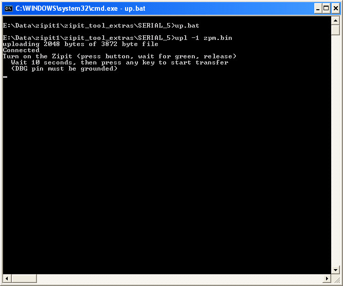
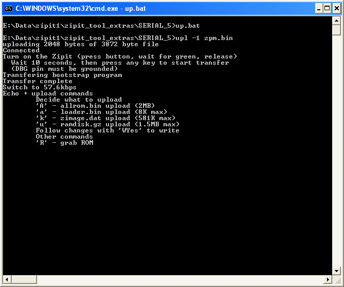
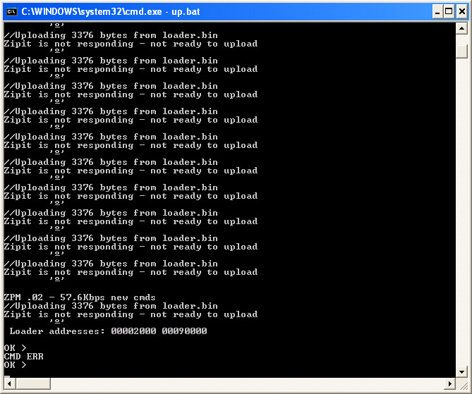
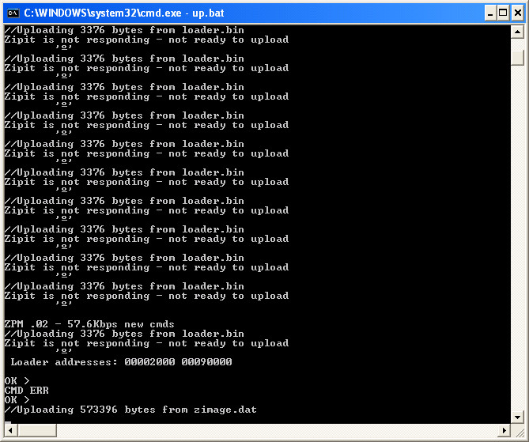
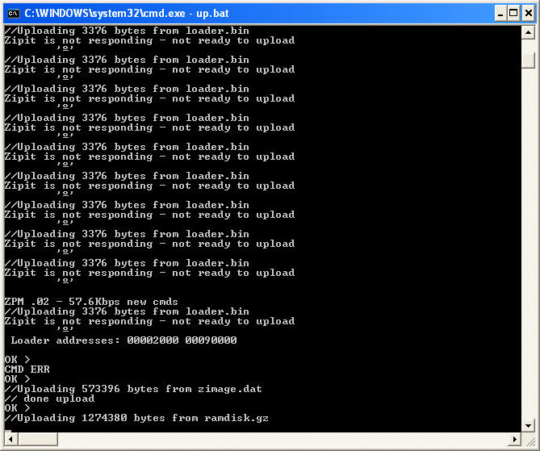
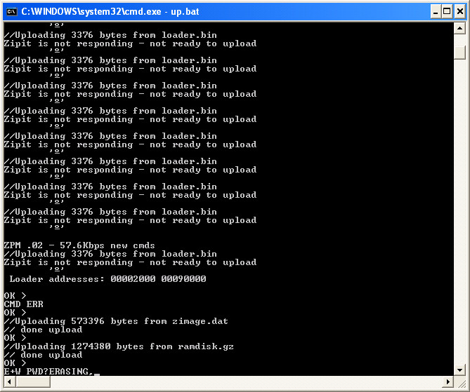
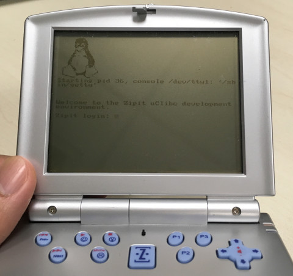

Steward
分享是一種喜悅、更是一種幸福
微電腦 - Zipit Z1 - 安裝OpenZipit系統
參考資訊：
https://elinux.org/ZipIt_Serial_Flash
https://github.com/steward-fu/website/releases/download/zipit-z1/openzipit.7z
https://github.com/steward-fu/website/releases/download/zipit-z1/zipit_tool_extras.zip
安裝OpenZipit步驟如下：
1. 下載zipit_tool_extras.zip、openzipit.7z
2. 關閉Zipit Z1電源
3. 連接DBG到GND
4. 連接UART到PC
5. 開啟Zipit Z1電源
6. 解壓縮openzipit.7z並且複製到zipit_tool_extras/SERIAL_5底下
7. 執行zipit_tool_extras/SERIAL_5的up.bat

8. 按下Enter

9. 接著開始按a(小寫)，直到出現如下畫面

10. 按下k(小寫)

11. 按下u(小寫)

12. 按下W(大寫)並且輸入Yes(字元不會顯示，注意大小寫)

完成
